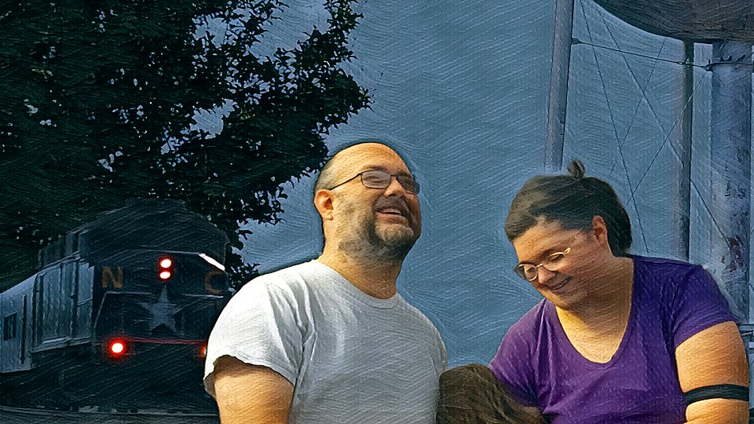
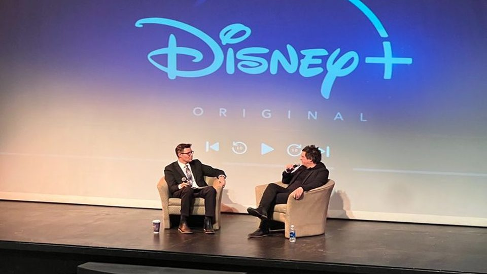
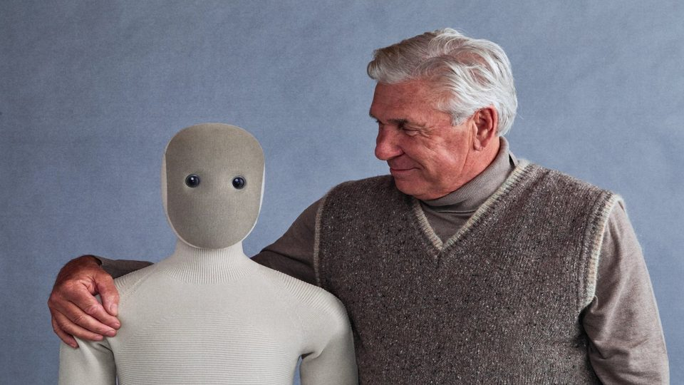
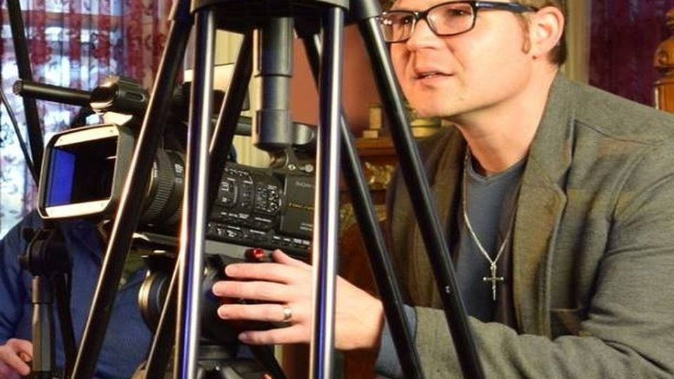
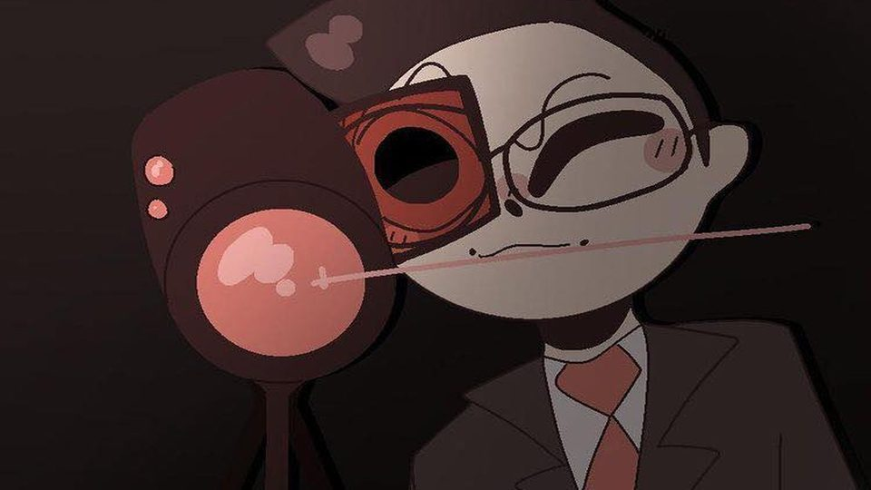

Life In the Gap
Mission-driven documentary with PBS NC programming offer and a 200+ person community screening. Built cross-campus and community storytelling with student collaborators.

Integrated content and creative leadership
Unified messaging, governance, and production workflows. Shipped recruitment and visibility storytelling, showcase communications, and stakeholder-ready assets.

1X NEO initiative
Stakeholder narrative and creative assets (proposal, one-sheets, deck) to support an innovation initiative, cross-program relevance, and procurement readiness.

Completed films
Selected credits and distribution links (IMDb + FilmFreeway). Accurate roles, fast scan.

Teaching systems (governance at scale)
Governance at scale: templates, QA, accessibility baseline, and measured iteration. Improved course evaluations from 4.30 to 4.77.
How I lead content and creative
- Single narrative spine, adapted to channel behavior and audience segment.
- Clear briefs, editorial calendar, and content governance for voice, clarity, and accessibility.
- Design system mindset, so quality scales and teams move faster.
- Feedback loops, performance learning, and iteration without losing brand integrity.
- Strong conceptual leadership with practical execution.
- Multi-format storytelling: written, visual, video, social, and web.
- Calm, direct leadership and a bias toward finished outputs.
Content governance (voice, clarity, accessibility)
- Voice and tone guidelines, with channel-specific adaptation.
- Accessibility baseline: alt text, captions, plain language, readable structure.
- Editorial QA: clarity, accuracy, consistency, and inclusive framing.
- Brief intake, calendar planning, and clear approvals.
- Reusable templates and a design-system mindset to scale quality.
- Performance review loop: learn, refine, and ship the next iteration.
About
I’m a creative leader and award-winning filmmaker with 10+ years of experience developing story-driven content across documentary, broadcast, and digital. I lead teams, shape narrative strategy, and deliver content from concept through delivery, with strong post-production and editorial leadership. I’m especially strong for mission-driven organizations because I balance emotional truth with clarity, accessibility, and measurable outcomes.
Contact
Troutman, NC (Remote) · (704) 604-9093
Email: aarondanielannas@gmail.com
LinkedIn: linkedin.com/in/aaron-daniel-annas-6403a417
Completed films: FilmFreeway | IMDb